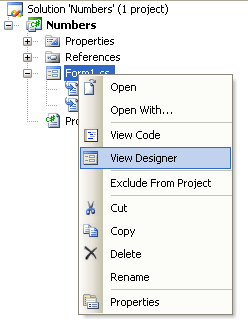
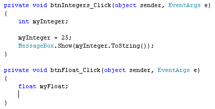
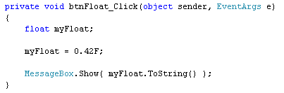
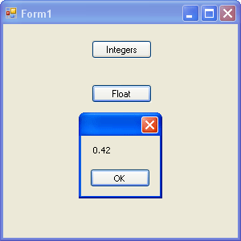

Double and Float Variables in C#
Integers, as was mentioned, are whole numbers. They can't store the point something, like .7, .42, and .007. If you need to store numbers that are not whole numbers, you need a different type of variable. You can use the double type, or the float type. You set these types of variables up in exactly the same way: instead of using the word int, you type double, or float. Like this:
float myFloat;
double myDouble;
(Float is short for "floating point", and just means a number with a point something on the end.)
The difference between the two is in the size of the numbers that they can hold. For float, you can have up to 7 digits in your number. For doubles, you can have up to 16 digits. To be more precise, here's the official size:
float: 1.5 × 10-45 to 3.4 × 1038
double: 5.0 × 10-324 to 1.7 × 10308
Float is a 32-bit number and double is a 64-bit number.
To get some practice using floats and doubles, return to your form. If you can't see the Form1.cs [Design] tab at the top, right click Form1.cs in the Solution Explorer on the right hand side. (If you can't see the Solution Explorer, click View > Solution Explorer from the menu bar at the top.)

Add a new button to your form. Set the following properties for it in the Properties Window:
Name btnFloat
Location: 110, 75
Text: Float
Double click your new button, and add the following line to the button code:
float myFloat;
Your coding window will then look like this:

To store something inside of your new variable, add the following line:
myFloat = 0.42F;
The capital letter F on the end means Float. You can leave it off, but C# then treats it like a double. Because you've set the variable up as a float, you'll get errors if you try to assign a double to a float variable.
Add a third line of code to display your floating point number in a message box:
MessageBox.Show( myFloat.ToString( ) );
Again, we have to use ToString( ) in order to convert the number to a string of text, so that the message box can display it.
But your coding window should look like ours below:

Run your programme and click your Float button. You should see a form like this:

Halt the programme and return to your coding window. Now delete the capital letter F from 0.42. The line will then be:
myFloat = 0.42;
Try to run your programme again. You'll get an error message, and a blue wiggly line under your code. Because you've missed the F out, C# has defaulted to using a double value for your number. A float variable can't hold a double value, confirming that C# is a strongly typed language. (The opposite is a weakly typed language. PHP, and JavaScript are examples of weakly typed languages - you can store any kind of values in the variables you set up.)
Another thing to be careful of when using float variables is rounding up or down. As an example, change the number from 0.42F to 1234.567F. Now run your programme, and click your float button. The message box will be this:
Halt the programme and return to your code. Now add an 8 before the F and after the 7, so that your line of code reads:
myFloat = 1234.5678F;
Now run your programme again. When you click the button, your message box will be this:
It's missed the 7 out! The reason for this is that float variables can only hold 7 numbers in total. If there's more than this, C# will round up or down. A number that ends in 5 or more will be rounded up. A number ends in 5 or less will be rounded down:
1234.5678 (eight numbers ending in 8 - round up)
1234.5674 (eight numbers ending in 4 - round down)
The number of digits that a variable can hold is known as precision. For float variable, C# is precise to 7 digits: anything more and the number is rounded off.
In the next part, we'll take a closer look at doubles